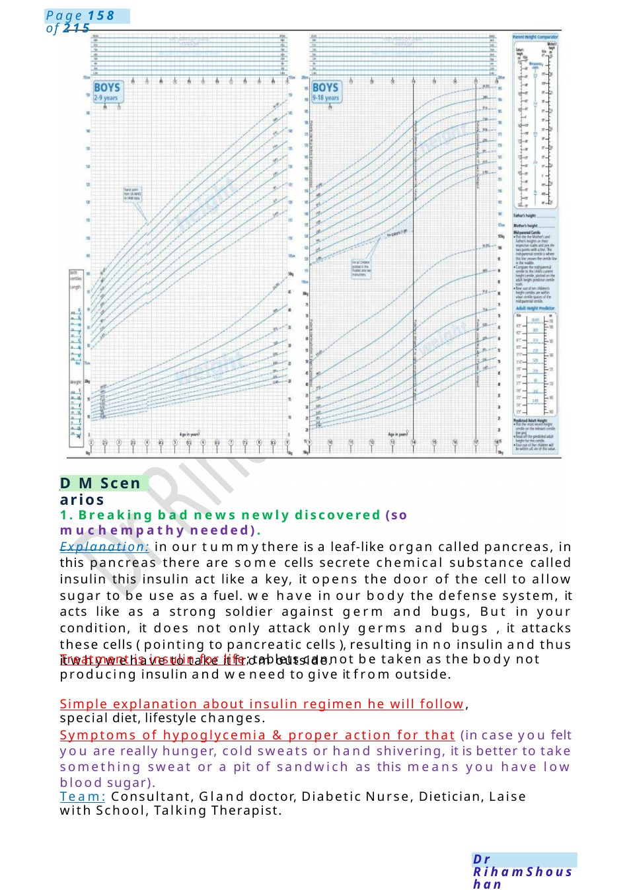
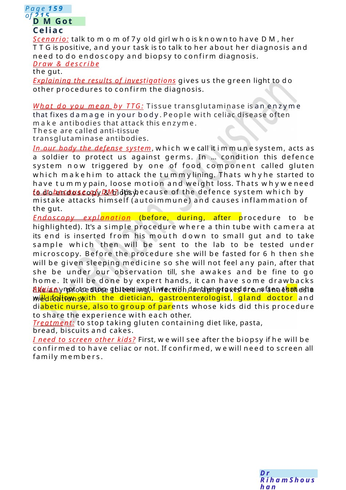

DMScenarios
1. Breaking bad news newly discovered (so muchempathy needed). Explanation: in our tummythere is a leaf-like organ called pancreas, in this pancreas there are some cells secrete chemical substance called insulin this insulin act like a key, it opens the door of the cell to allow sugar to be use as a fuel. we have in our body the defense system, it acts like as a strong soldier against germ and bugs, But in your condition, it does not only attack only germs and bugs , it attacks these cells ( pointing to pancreatic cells ), resulting in no insulin and thus it whywehave to take it from outside.
Scenario Summary
1. Breaking bad news newly discovered (so muchempathy needed). Explanation: in our tummythere is a leaf-like organ called pancreas, in this pancreas there are some cells secrete chemical substance called insulin this insulin act like a key, it opens the door of the cell to allow sugar to be use as a fuel. we have in our body the defense system, it acts like as a strong soldier against germ and bugs, But in your condition, it does not only attack only germs and bugs , it attacks these cells ( pointing to pancreatic cells ), resulting in no insulin and thus it whywehave to take it from outside.
Full Original Scenario

DMScenarios
1. Breaking bad news newly discovered (so muchempathy needed).
Explanation: in our tummythere is a leaf-like organ called pancreas, in this pancreas there are some cells secrete chemical substance called insulin this insulin act like a key, it opens the door of the cell to allow sugar to be use as a fuel. we have in our body the defense system, it acts like as a strong soldier against germ and bugs, But in your condition, it does not only attack only germs and bugs , it attacks these cells ( pointing to pancreatic cells ), resulting in no insulin and thus it whywehave to take it from outside.
Treatment is insulin for life; tablets cannot be taken as the body not producing insulin and weneed to give it from outside.
Simple explanation about insulin regimen he will follow, special diet, lifestyle changes.
Symptoms of hypoglycemia & proper action for that (in case you felt you are really hunger, cold sweats or hand shivering, it is better to take something sweat or a pit of sandwich as this means you have low blood sugar).
Team: Consultant, Gland doctor, Diabetic Nurse, Dietician, Laise with School, Talking Therapist.

DMGot Celiac
Scenario: talk to momof 7y old girl whois knownto have DM,her TTGis positive, and your task is to talk to her about her diagnosis and need to do endoscopy and biopsy to confirm diagnosis.
Draw & describe the gut.
Explaining the results of investigations gives us the green light to do other procedures to confirm the diagnosis.
What do you mean by TTG: Tissue transglutaminase is an enzyme that fixes damage in your body. People with celiac disease often make antibodies that attack this enzyme.
These are called anti-tissue transglutaminase antibodies.
In our body the defense system, which wecall it immunesystem, acts as a soldier to protect us against germs. In ... condition this defence system now triggered by one of food component called gluten which makehim to attack the tummylining. Thats whyhe started to have tummypain, loose motion and weight loss. Thats whyweneed to do endoscopy &biopsy.
Is it because of DM? It's because of the defence system which by mistake attacks himself (autoimmune) and causes inflammation of the gut.
Endoscopy explanation (before, during, after procedure to be highlighted). It's a simple procedure where a thin tube with camera at its end is inserted from his mouth down to small gut and to take sample which then will be sent to the lab to be tested under microscopy. Before the procedure she will be fasted for 6 h then she will be given sleeping medicine so she will not feel any pain, after that she be under our observation till, she awakes and be fine to go home. It will be done by expert hands, it can have some drawbacks like any procedure (bleeding, infection, anaphylaxis from anaesthesia medications).
Advice: not to stop gluten until we will do the procedure, after that she will follow with the dietician, gastroenterologist, gland doctor and diabetic nurse, also to group of parents whose kids did this procedure to share the experience with each other.
Treatment: to stop taking gluten containing diet like, pasta, bread, biscuits and cakes.
I need to screen other kids? First, wewill see after the biopsy if he will be confirmed to have celiac or not. If confirmed, wewill need to screen all family members.